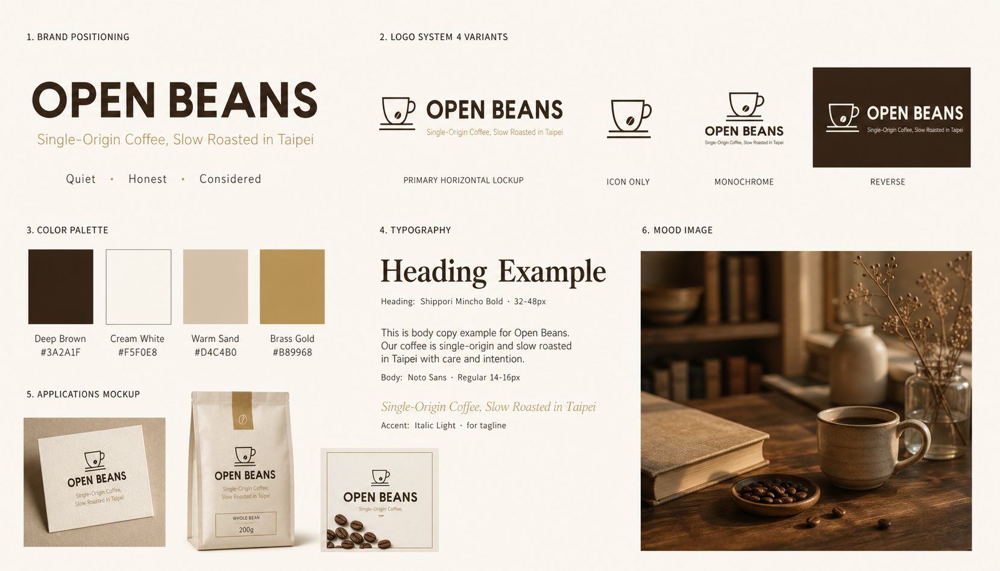

返回 CH6 模板速查站
(A5)
Brand Identity Board 品牌識別 mood board
把一個品牌的 logo / 配色 / 字體 / 應用範例 / 風格參考一頁攤平、給客戶看「整個品牌世界觀」。提案會議用、設計交付用、作品集用、品牌手冊封面用。
這張卡片你會學到
能判斷何時用 brand identity board（與其他卡片差異）
能拆解 6 段並產出可給客戶看的品牌識別總覽
能識別 4 種踩雷（資訊太密／層級不清／應用範例不真實／配色卡跑掉）
(01)
適用場景
這個模板用在哪
一張 brand board 把品牌識別系統的所有元素攤平：logo（4 個變體）+ 主副配色（3-5 色）+ 字體（標題＋內文）+ 應用範例（名片、瓶身、貼紙、IG）+ 風格氛圍照（mood image）。客戶看一眼就知道這是什麼品牌。
典型客戶 / 交付物 新品牌主 / 比稿提案、單次接案 NT$15,000-50,000、交付：brand board 提案 1 頁（含 logo / 色 / 字 / 應用 mockup）
四個典型用途：
- 客戶提案 / 比稿用（1 張圖看完整個品牌方向）
- 個人作品集頁面（「我幫客戶 X 做的 brand board」）
- 品牌手冊封面 / brand book 第一頁（後續分章詳述）
- 工作室年度回顧 / 案例展（1 年做了 N 個 brand 一覽）
| 對比項 | 本卡片 · A5 Brand Identity Board 品牌識別 mood board | 近似模板 |
|---|---|---|
| 資訊密度 | 最高（含 logo + 色 + 字 + 應用 + mood） | 其他卡片：單一視覺 |
| 用途 | 提案 / 內部 brand book / 作品集 | A1-A4：對外行銷 |
| 分區 | 通常 4-6 區塊、grid 排版 | 其他：單一構圖 |
| 文字密度 | 中等（每區小標 + 簡短說明） | A3：克制；A4：標題 + 副題 |
| 讀者 | 設計師 / 品牌主 / 內部團隊 | A1-A4：終端消費者 |
| 產出難度 | 高（多區塊一致性最考驗） | A3：低；A1：中 |
一句話判斷：客戶問「能不能給我看一頁的品牌總覽」走 A5；問「對外行銷主圖」走 A1-A4；問「給設計師看 brand guideline」走 A5。A5 是接案作品集必備——客戶看完通常比較願意往中高預算靠近。
(02)
模板拆解｜6 段 prompt 結構
brand identity board 6 段。核心難度在「分區一致性」——每個區塊獨立看都要好、合在一起又要看得出是同一品牌：
| 段 | 段落 | 必問還是可預設 | 填什麼 |
|---|---|---|---|
| 1 | brand 定位區 | 必問 | 品牌名 + 1 句 mission statement + 個性形容詞 3-5 個 |
| 2 | logo system | 必問 | 主 logo + 圖標版 + 單色版 + 反白版（4 變體） |
| 3 | color palette | 必問 | 主色 1-2 + 副色 2-3 + 強調色 1，每色含 HEX + 用途說明 |
| 4 | typography | 必問 | 標題字 + 內文字 + 強調字（3 種）；含字體名 + 字級範圍 |
| 5 | applications 應用範例 | 選用 | 名片 + 瓶身 / 包裝 + 貼紙 + IG 貼文 mockup |
| 6 | mood image 氛圍照 | 選用 | 1 張代表品牌氣質的攝影或抽象視覺 |
記憶口訣：定位 → logo → 色 → 字 → 應用 → mood。新手最常忽略「應用範例的真實性」——logo 印在卡片上要有真實的紙張紋理、印在瓶身要有實際的反光。明確寫「realistic mockup textures」「show in actual context」。
(03)
示範圖｜可複製、可重現
下面這張是 OPEN BEANS 完整 brand identity board——一頁看完整個品牌世界觀。客戶看完直接點頭付費 NT$50000+ brand identity 案。

完整 prompt · OPEN BEANS 品牌識別 brand board
請生成一張完整的品牌識別 brand identity board： 【整體構圖】橫式 16:9、6 區塊 grid 排版（2 列 × 3 欄）、整體像「設計師交付給客戶看的 brand book 第一頁」。 【品牌】OPEN BEANS（精品咖啡品牌、強調 single-origin + slow roasted + Taipei-based） 【區塊 1（左上）· 品牌定位】 - 大字 brand name：「OPEN BEANS」（無襯線粗體、深棕） - mission：「Single-Origin Coffee, Slow Roasted in Taipei」（細體、淺棕） - 個性 keywords：「Quiet · Honest · Considered」（極小字、列三點） 【區塊 2（右上）· logo system 4 變體】 - 主 logo（橫式組合） - 圖標版（線稿咖啡杯） - 單色版 - 反白版（深棕底 + 米白 logo） 【區塊 3（左中）· color palette】 - 主色 1：Deep Brown #3A2A1F - 主色 2：Cream White #F5F0E8 - 副色：Warm Sand #D4C4B0 - accent：Brass Gold #B89968 （每色含色塊 + HEX 標示） 【區塊 4（右中）· typography】 - Heading：「Shippori Mincho Bold · 32-48px」（樣字示例） - Body：「Noto Sans · Regular 14-16px」（樣字示例） - Accent：「Italic Light · for tagline」（樣字示例） 【區塊 5（左下）· applications mockup】 - 名片正面（mockup with paper texture） - 200g 咖啡豆袋 - IG 貼文方圖 【區塊 6（右下）· mood image】文青咖啡店一角的氛圍照（小、虛化、暖光） 【整體色板】嚴格三色：米白底 + 深棕主 + 燙金 accent。 【字體】全英文、僅 2 種字體：襯線粗體（標題）+ 無襯線細體（內文）。 【限制】嚴禁人物（mood image 內也不要有臉）、嚴禁區塊互相搶戲、嚴禁字體超過 2 種、嚴禁色板超過 4 色、嚴禁中文字、嚴禁區塊邊框（用空白分隔即可）。
讀圖時看這 4 個點：(1) 6 區塊比例對不對（每區大小相當）？(2) logo 4 變體都看得出是同一個 logo 嗎？(3) 色板 HEX 標示清不清楚？(4) 應用 mockup 有沒有真實感（紙張紋理 / 包裝光影）？
(04)
改成你的場景｜踩雷與失敗案例
把 prompt 拿來、改 3 個替換槽就變你的版本：
| 替換槽 | 你的版本 |
|---|---|
| ⓐ 品牌名 + mission = ? | 例：OPEN BEANS · Single-Origin Coffee / 弄一下工作室 · 課程設計 |
| ⓑ 配色 = ?（主 1-2 + 副 2-3 + 強調色 1） | 例：深棕＋米白＋砂色＋燙金（咖啡）／墨綠＋米白＋金（茶） |
| ⓒ 應用範例 = ? | 例：名片＋包裝＋IG（電商）／卡片＋海報＋EDM（自媒體） |
最常見的 4 種踩雷：
- 資訊太密、區塊看不清 AI 把所有元素塞滿、區塊邊界模糊、客戶看不出哪是哪。解法：明確寫「6-grid layout, generous whitespace between sections, no borders」、區塊間留 5% 空白。
- logo 變體不一致 主 logo 是 sans serif、圖標版 AI 給你 script 風——4 個變體像不同品牌。解法：明確寫「all 4 logo variants must share same typography and visual DNA」「only color and arrangement varies」。
- 應用 mockup 不真實 名片 mockup 像 PowerPoint 模板、不像真的印刷品。解法：明確寫「realistic mockup with paper texture, soft shadows, slight perspective」、避免「flat illustration」。
- 中文 brand identity 一律後製 AI 生圖工具對中文字體只給新細明體系。A5 的最佳策略：用英文 brand name + mission 跑 AI 生圖、再用 後製字體疊圖工作流附錄。
實戰提醒：A5 brand board 是「給其他設計師看」的——同行對字體最敏感、新細明體 brand book 一秒被識破。Figma 用 component 一次設計、所有應用 mockup 自動套同字體、效率最高。
交付提醒 本卡片的 AI 生成的示範圖不是可直接給客戶的最終交付品。中文商業案一律先用 AI 生出構圖（含英文佔位文字）、再走 後製字體疊圖工作流 在 Figma／Canva 疊上中文、最後校稿確認才交付給客戶。
本卡片改寫自 ConardLi／garden-skills 之
brand-identity-board.md 模板（MIT License、2026），已對中文進行台灣用語在地化、加入本地接案情境與失敗案例。